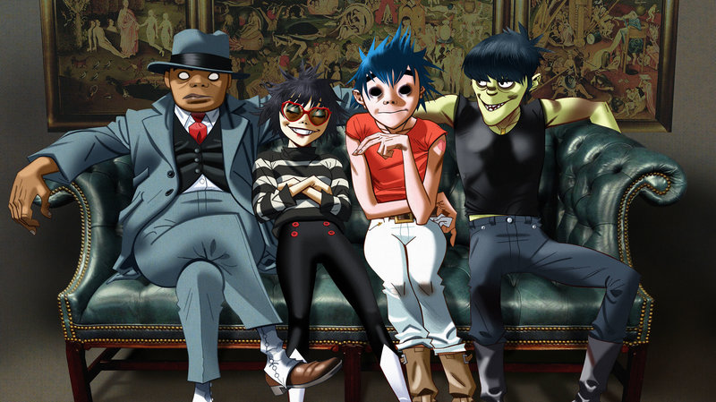

Gorillaz Fan Site
Who Are The Gorillaz
Gorillaz are a English virtual band created in 1998 by musician Damon Albarn and artist Jamie Hewlett. The band primarily consists of four animated members: 2-D (lead vocals, keyboards), Murdoc Niccals (bass guitar, replaced by Ace D. Copular while incarcerated), Noodle (guitar, keyboards), and Russel Hobbs (drums and percussion). Their fictional universe is explored through music videos, interviews, and other short cartoons. In reality, Albarn is the only permanent musical contributor, and often collaborates with other musicians.